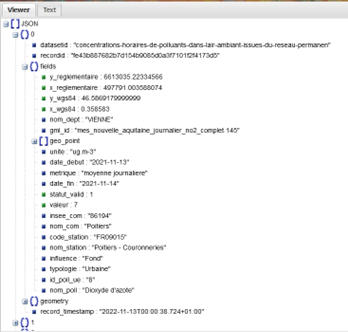
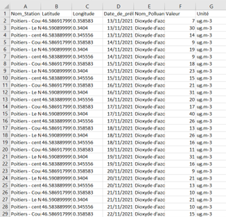

Ecriture et lecture de fichiers de données (json csv)
Ce projet de groupe consistait à développer un programme en Python pouvant, à partir de données sous format JSON, renvoyer un tableau CSV des mêmes données, triées, filtrées et ordonnées selon des colonnes définies. Nous avions travaillé avec un jeu de données sur la concentration des polluants dans l’air ambiant. Plusieurs consignes supplémentaires nous été données pour réaliser ce projet : il fallait pouvoir supprimer les lignes de données incomplètes, mais aussi gérer le format des dates (qui étaient en anglais).
Pour réaliser cela, il fallait d’abord comprendre la structure des données que nous allions modifier et envoyer au fichier CSV, ce qui a été possible grâce à un site dédié permettant de visualiser un fichier JSON.
Le programme a permis par la suite de récupérer chaque ligne de données, convertir la date en format français, et la supprimer si la ligne était incomplète, pour pouvoir l’écrire dans le fichier CSV.
Compétences acquises :
- Compréhension de l’importance de connaître la structure des données
- Approfondissement de mes compétences en Python
- Compréhension de la base des structures algorithmiques
- Gérer des fichiers de type JSON et CSV
- Interprétation des demandes et les besoins d’un commanditaire
Illustrations

Le site "https://jsonviewer.stack.hu/" a permis de trier et ranger les données afin que nous puissons les visualiser

Voici le rendu final sous Excel de notre travail, le code Python ajoute aussi des entêtes au début des colonnes